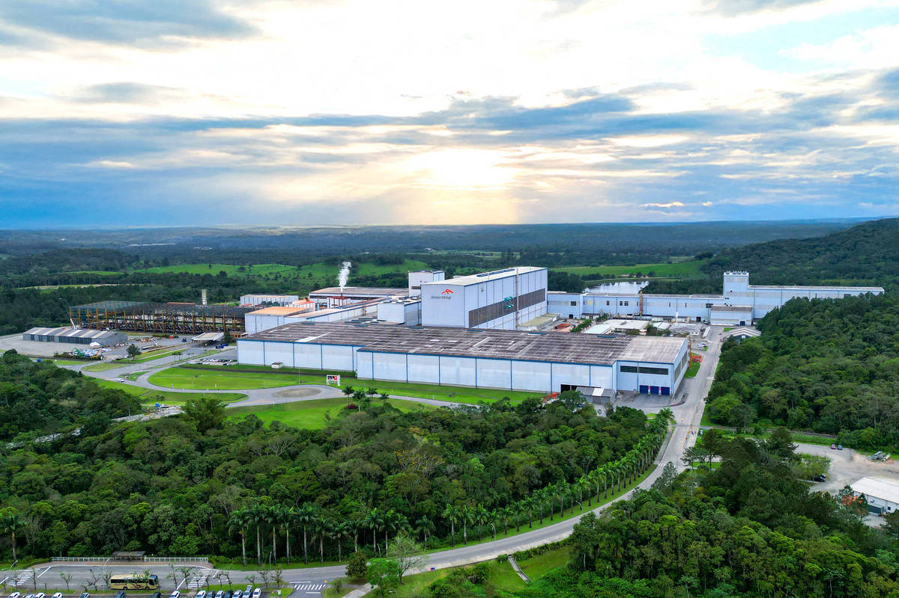
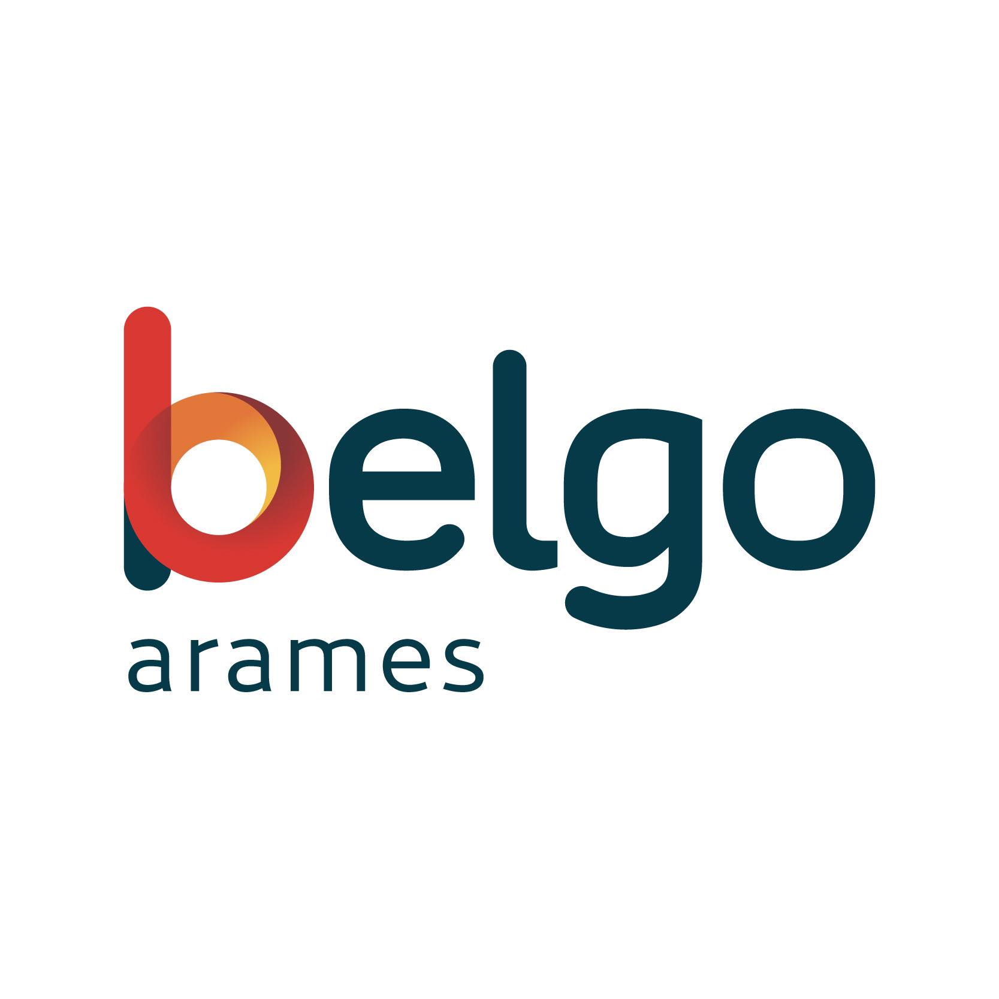
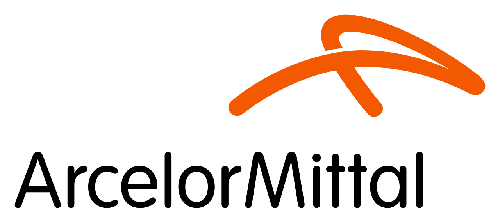
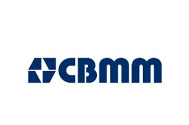

O futuro do aço é verde
Uma alianca entre as maiores referencias da industria metalurgica brasileira para transformar a producao de aço em um modelo sustentavel para o mundo.

reducao potencial de CO2 com hidrogenio verde
de aço reciclado por ano no Brasil
meta de neutralidade carbonica do setor
da industria metalurgica nacional unidos
Os 4 Pilares da Forja Verde
Tecnologias e praticas que estao transformando a industria do aço em um setor sustentavel e eficiente.
Hidrogenio Verde
Substituicao do carvao metalurgico por hidrogenio produzido a partir de energia renovavel, eliminando as emissoes de CO2 na reducao do minerio de ferro.
Saiba maisReciclagem Avancada
Ampliacao do uso de sucata ferrosa em fornos eletricos a arco, reduzindo o consumo de minerio virgem e diminuindo drasticamente o impacto ambiental.
Saiba maisCaptura de Carbono
Implantacao de sistemas CCUS (captura, utilizacao e armazenamento de carbono) nas plantas industriais para neutralizar as emissoes residuais do processo.
Saiba maisEficiencia Energetica
Modernizacao dos processos produtivos com automacao industrial e inteligencia artificial para reduzir o consumo de energia e as emissoes associadas.
Saiba maisParceiros da Iniciativa
Tres gigantes da industria metalurgica brasileira reunidos em torno de um objetivo comum: uma producao mais limpa e responsavel.

Belgo Arames
Empresa brasileira especializada em fios e arames de aço, pioneira na adocao de processos de reciclagem e na producao com energia de fontes renovaveis.
- 100% de energia renovavel nas plantas
- Alta taxa de uso de sucata ferrosa
- Logistica de coleta e reciclagem de arames

ArcelorMittal
Maior produtora de aço do mundo com operacoes no Brasil, lider em inovacao para descarbonizacao da siderurgia global. Responsavel pelas metas de emissao zero ate 2050.
- Producao de aço de baixo carbono
- Investimentos em hidrogenio verde
- Plantas piloto de CCUS no Brasil

CBMM
Companhia Brasileira de Metalurgia e Mineracao, maior produtora mundial de niobio, elemento essencial para a producao de aços de alta resistencia e menor peso.
- Niobio para aços mais resistentes e leves
- Reducao de material necessario por peca
- Pesquisa em novas ligas sustentaveis
Por que unir industria e sustentabilidade
O aço é um dos materiais mais reciclados do mundo é fundamental para a infraestrutura global. Também é responsável por cerca de 7% das emissoes globais de CO2. Essa contradicao pode ser resolvida.
O projeto Forja Verde nasce da certeza de que a industria siderurgica nao precisa escolher entre competitividade economica e responsabilidade ambiental. Com as tecnologias certas e a colaboracao entre lideres do setor, é possível produzir mais, com menos impacto.
Calcular meu impactoO aço é 100% reciclável
Sem perda de propriedades a cada ciclo, o aço pode ser reprocessado indefinidamente, tornando-se um pilar da economia circular.
Niobio reduz emissoes indiretamente
Aços microligados com niobio sao mais resistentes e leves, o que reduz a quantidade de material necessario e, por consequencia, as emissoes totais.
Brasil lidera em energia limpa
Com mais de 80% da matriz eletrica renovavel, o Brasil tem vantagem competitiva unica para descarbonizar a producao siderurgica.
Simulador de Emissoes de Carbono
Insira os dados da sua producao e veja como cada tecnologia do Forja Verde pode reduzir suas emissoes de CO2.
Preencha os dados ao lado para ver o resultado da sua simulacao.
Faca parte da transformacao
Conecte sua empresa ao ecossistema Forja Verde e acesse tecnologias, dados e parcerias para descarbonizar sua producao.